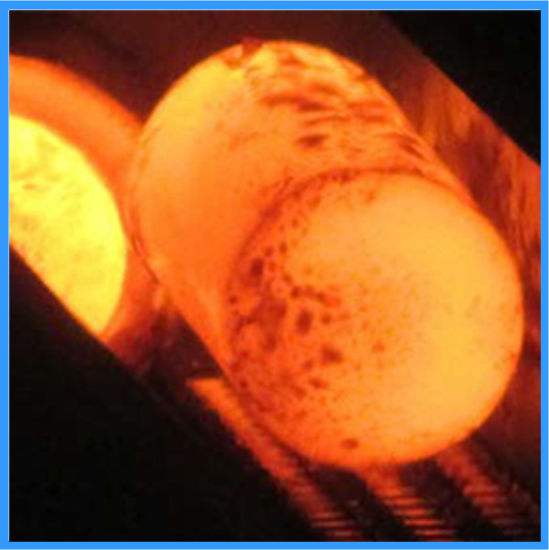
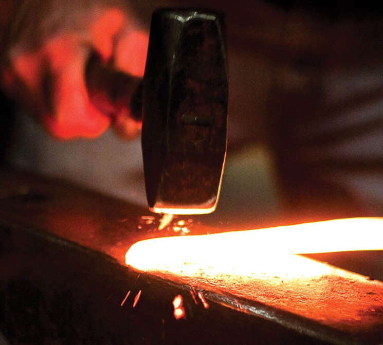
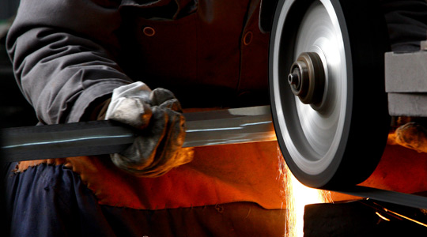
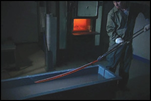
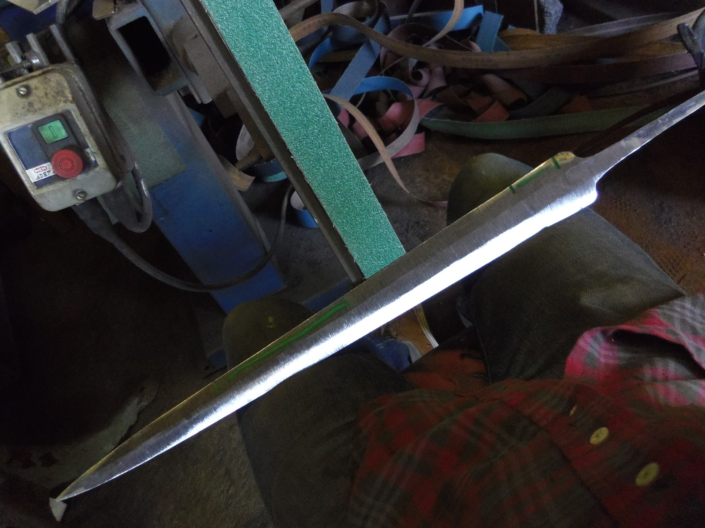
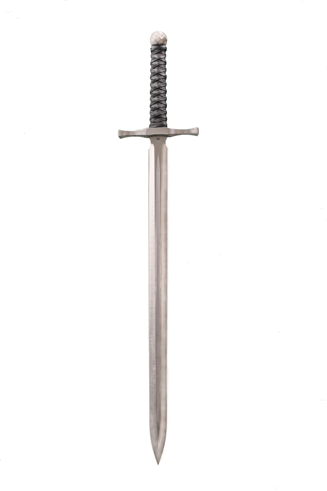

The art of sword forging
Material selection
Selecting the material for your blade is very dependant on the type of sword you would like to make. Pick a steel that is too brittle, and your blade will snap after a couple of hits. A dense steel will make a good short sword or a sword breaker, but a claymore would be too heavy to even lift. A soft steel would do great for a bendy rapier, but would be problematic for a saber. So first decide what you would like to make, and then select the alloy.
If you desire a more historically accurate material, you can make the steel yourself. All you need is a coal furnace and some iron. But beware of adding too much carbon into the steel, it would make the material useless.
For a damascus steel look, you would need to layer soft and hard steels, before merging them into a single block. For Japanese blade forging, the hard steel would first need to be formed into a block, and then the softer steel would need to be inserted into the block.
Drawing out the blade
Once you have your block of steel, heat it to a steady red / yellow colour and start hammering away. Start at one end of the block and work your way down it. Do not try to hammer the material to the desired thickness in the first pass! Make multiple passes, slowly drawing out the metal in one direction. Keep the width roughly constant throughout the process, since the blade generally is not very wide. Reheat the metal once it losed the red colour. To make the material stronger, you can draw out the block, then fold it in half, then draw it out again. Repeat continuously until the necessaru number of layers has been formed.
Do not forget about the tang. It is a piece of metal that is made from the same block of steel as the blade, never is it attached / welded on afterwards. It should be roughly the same thickness as the blade, to ensure that the sword does not snap at the hilt.
Rough grinding
Once the blade has cooled down, proceed to grind the blade. Remove all black flakes that remain from forging, but do not start to polish the blade. The edges need to be roughly ground to shape, but no true edge must be put in. Remember to allow the blade to cool during grinding.
A grinding wheel is obviously the fastest method to grind the blade into shape, but if pursuing the true methods used in the past, files can be used instead.
Quenching
This is the most important part of the process. You have hammered away at the blade, distrupting the microstructures and molecular lattices inside the metal, so now is the time to organise them and set them into shape. Heat the blade to a red / orange / yellow colour and quickly dip it into oil or water. The colour and the quenching medium depend on the material used, as well as the desired characteristics of the sword. Be aware that the blade may warp during the sudden cooling, so you will only have several second to fix the bending! Do not reheat the blade, as it will ruin the quenching process.
A secondary quenching can be performed on some blades by heating an oil bath and immersing the blade for several hours. However, a repeated quenching by heating the blade to red colour and then using water to cool it rapidly will render the blade useless.
Truing and polishing
Now the easy part. The blade needs to be ground into final shape, the edges need to be refined and sharpened, and the whole sword needs to be polished. This process aims to refine the shape of the sword, not take away large quantities of material. For this reason the earlier grinding process is important, as taking too much material away will ruin the lattice structure of the metal. Use progressive grits to smooth all surfaces, finally getting a magnificent looking blade. If you have used different steels in the process, or would like to bring out the Damascus pattern, then dip the blade into etching acid for several minutes. This will bring out the difference between the layers.
Finishing up
All that remains is to put the handle on the sword, add some decorations like the pommel and guard, maybe even adding some gold carvings into the blade. Be creative!